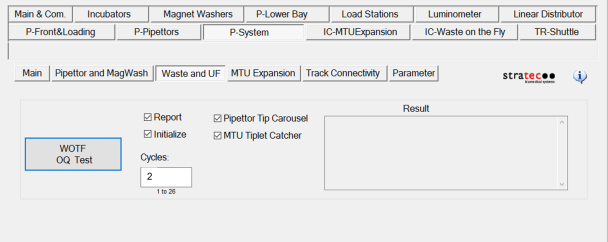
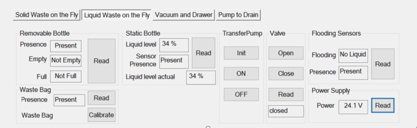
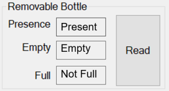
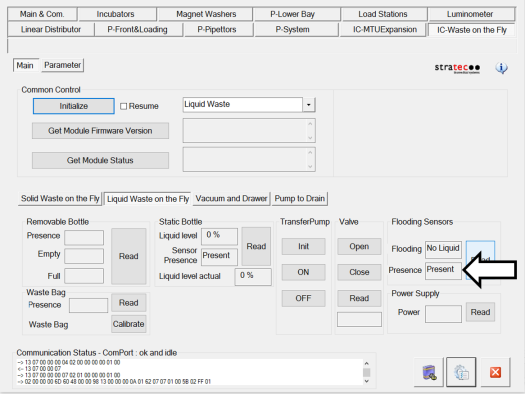
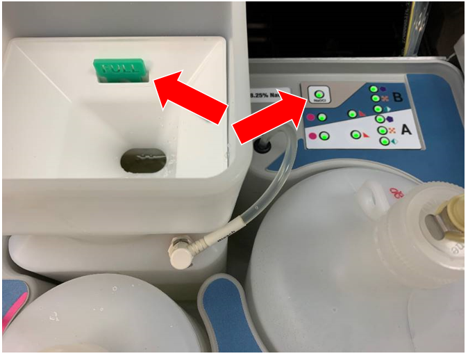

Waste on the Fly Installation Verification
Procedure
- Open Service Software.
- Turn the Vacuum off.
- Click on IC-Waste on the Fly tab. Select the IC-Waste on the Fly in the drop down list in the Common Control window
- Click Initialize.
- Verify there are no errors.
 Calibrate the Waste Drawer bag sensor.
Calibrate the Waste Drawer bag sensor.
Note: SSW will prompt to remove the Waste Bag.
- Open Service Software.
- Click on IC-Waste on the Fly.
- Click on Vacuum and Drawer.
- Close all doors and panels on the system.
- Under Waste Bag, click on Calibrate Waste Bag.

Solid Waste on the Fly Verification Procedure
Tip Carousel & Tiplet Catcher
- Run 2 Cycle of the WOTF OQ.
- Click on the P-System tab.
- Select the Waste and UF tab.
- Enter 2 in the Cycles field.
- Select Initialize, Report, Pipettor Tip Carousel and MTU Multi-tube unit—Container used to process tests in the instrument. An MTU contains five separate reaction tubes. The MTU is moved through the instrument by the linear distributor and includes five tiplets for pipettiing to be used in the mag wash station. Tiplet Disposable tip within an MTU. Catcher.
Note: Ensure you have at least 4 MTUs loaded, prior to starting this test or the test will fail.
- Click on WOTF OQ Test to run an OQ.
Note: Refer to TB-01493 if the test fails.

Liquid Waste on the Fly Verification Procedure
- Verify that the vacuum pressure is between 6 and 8 in Hg (-203 to -271 mbar).
- Click on the IC-Waste on the Fly tab.
- Select the Liquid Waste on the Fly tab.

- Verify the Removable Bottle Sensors are reading Present, Empty, and Not Full with no fluid present.

- Verify the Static bottle sensors.
- Turn ON the Transfer Pump.
- Verify the flood sensors are present and reading No Liquid.

Universal Fluids on the Fly Verification Procedure
- Place the bleach bottle into its proper position in the Universal Fluid Drawer.
- Fill with bleach until you see the float and verify that the indicator light shows Full.

- Start Panther Main and run Prime Operation of pumping fluid through tubing to ensure proper and consistent fluid delivery (remove air from the tubing, etc.)..
- If the Prime is completed with no errors the verification is complete.
- Replace ALL fluids with a fresh set for the customer.
 button at the top of the page to send feedback, comments, or change requests.
button at the top of the page to send feedback, comments, or change requests.